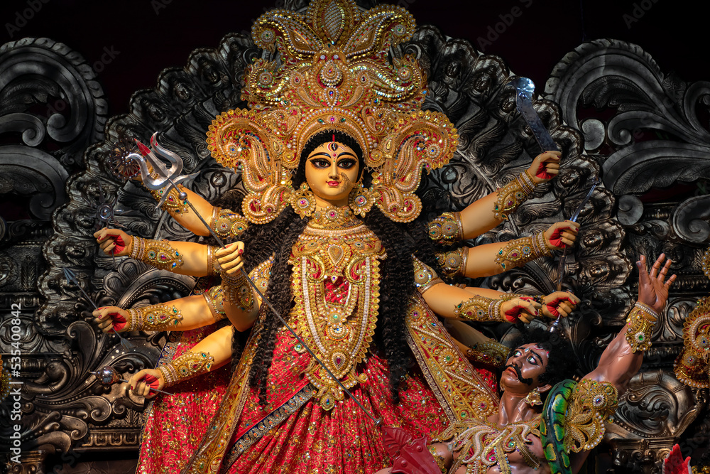
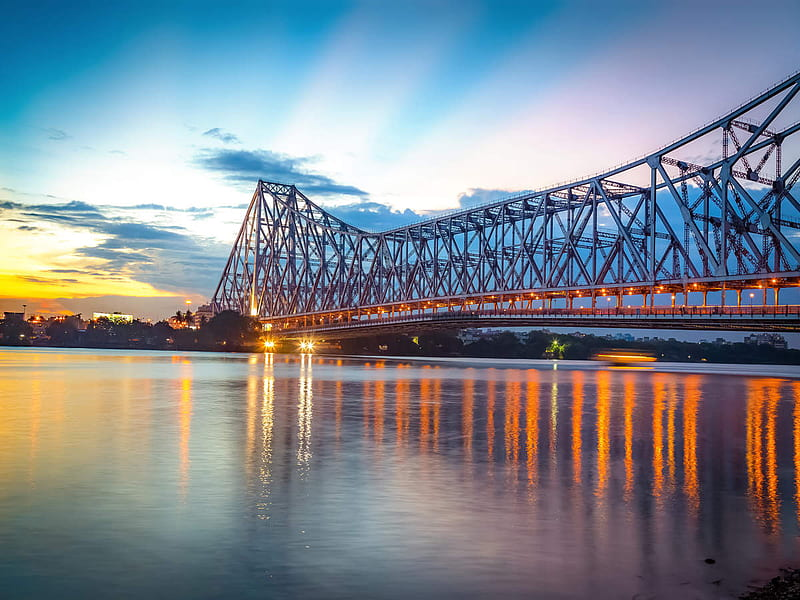
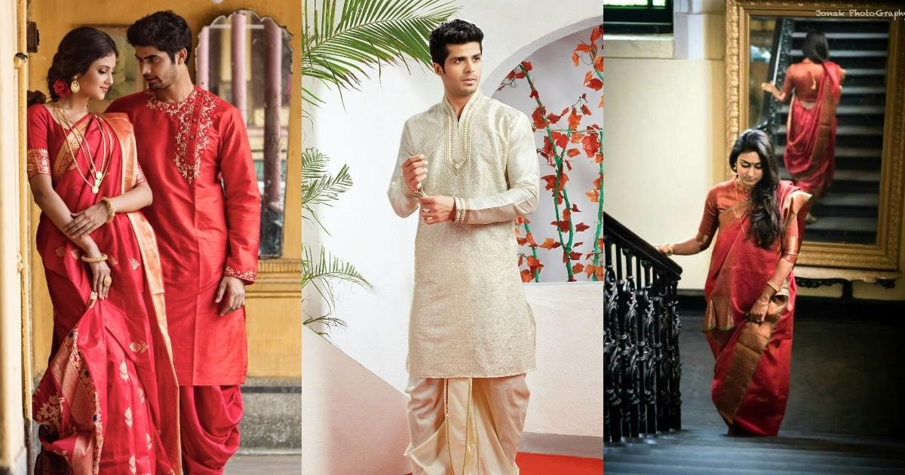
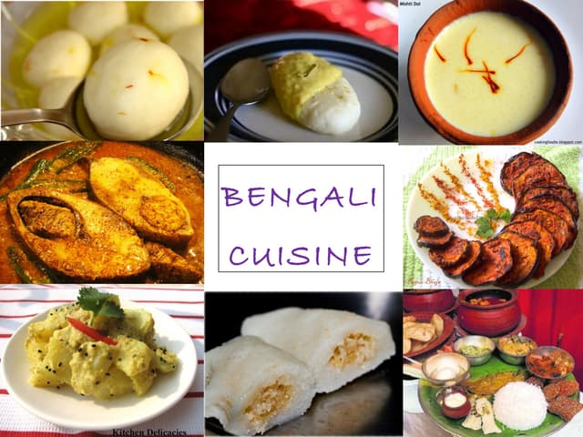

| ✧ Aspect | Information |
|---|---|
| ✧ Capital | Kolkata |
| ✧ Chief minister | Mamata Banerjee |
| ✧ Largest City | Kolkata |
| ✧ Districts | 23 |
| ✧ Official Language | Bengali |
| ✧ Othar Language | Hindi, Santali, Urdu, and Nepali |
| ✧ Population | Approximately 100 million |
| ✧ Area | 88,752 square kilometers |
| ✧ Major Rivers | Ganges, Hooghly, Teesta |
| ✧ Major Industries | Textiles, Jute, Chemicals, Electronics |
| ✧ Popular Places | Victoria Memorial, Sunderbans, Darjeeling, Howrah Bridge |
Traditional Dresses in West Bengal includes the dhoti or pajama with panjabi for men, while saree, particularly tant saree, for women. Traditional attire still holds significance in cultural events and festivals.
West Bengal, situated in the eastern part of India, boasts a rich historical legacy dating back to ancient times. The region has been a melting pot of cultures, witnessing the rule of various dynasties and empires.
The early history of West Bengal is marked by the presence of powerful kingdoms such as the Mauryas, Guptas, Palas, and Senas. These dynasties played a crucial role in shaping the cultural and political landscape of the region.
During the medieval period, West Bengal witnessed the emergence of the Bengal Sultanate, followed by the Mughal Empire. The Mughals exerted significant influence over the region, contributing to its architectural and artistic heritage.
The British East India Company established its foothold in Bengal in the 17th century, eventually annexing it to the British Empire. Bengal became a center of the Indian independence movement, with leaders like Rabindranath Tagore, Subhas Chandra Bose, and Netaji Subhas Chandra Bose leading the struggle against British rule.
After India gained independence in 1947, West Bengal emerged as a state within the Indian Union. Kolkata, the capital city, became a hub of culture, education, and commerce. Today, West Bengal continues to thrive as a vibrant state, renowned for its literature, art, cuisine, and festivals.



